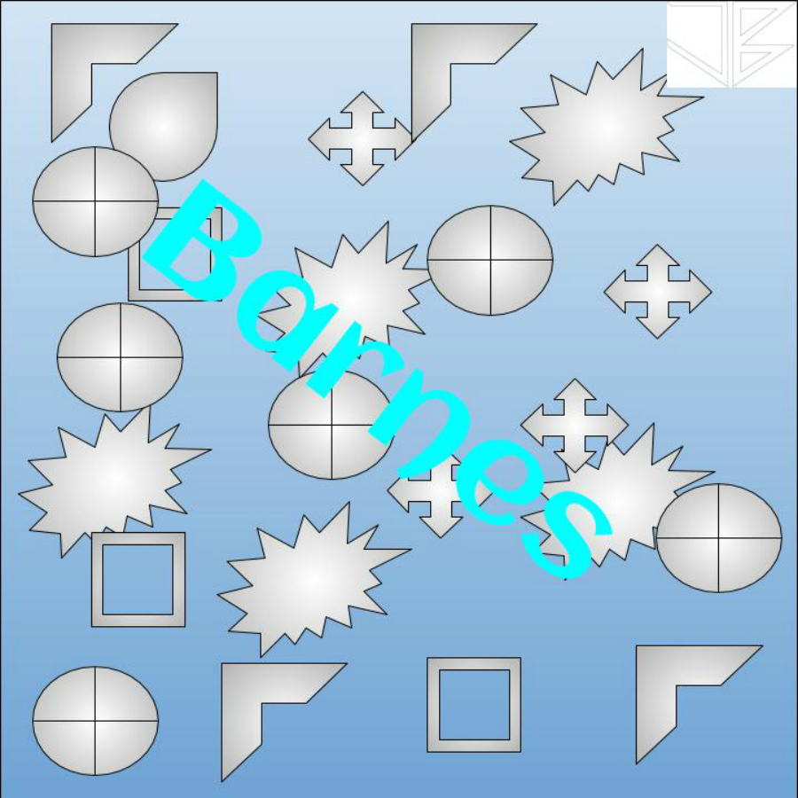
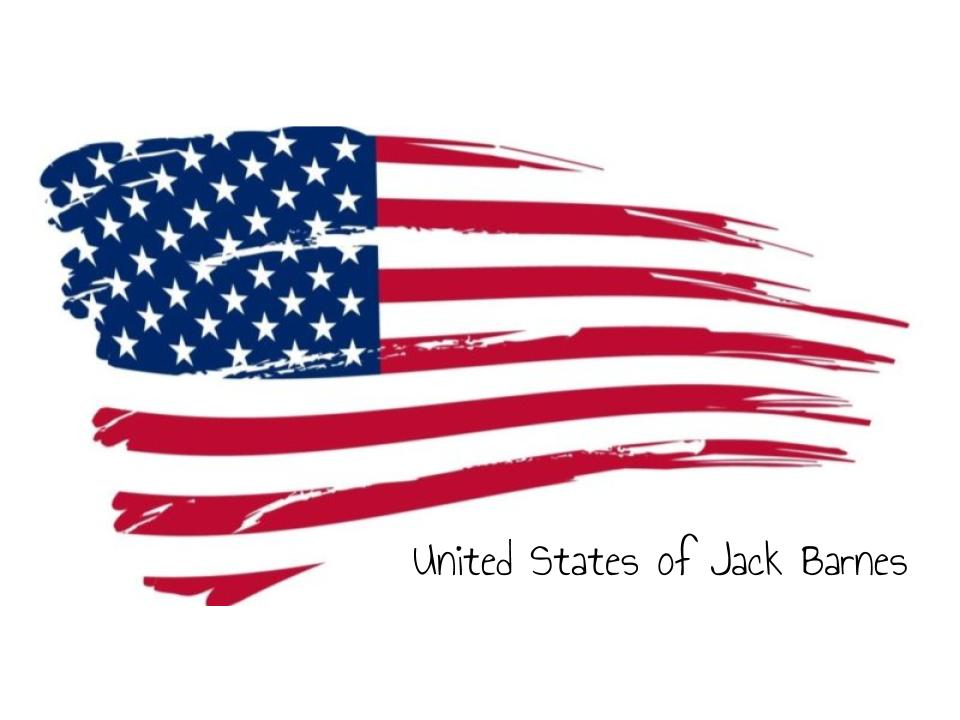
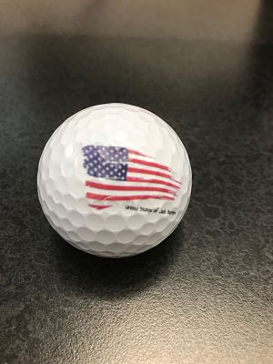
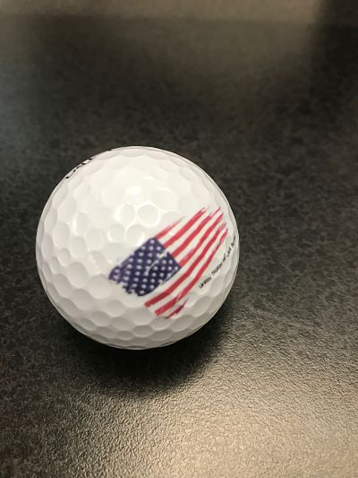

Home
Rotation 3
T-Shirt Printing
This week, we started by working with printing t-shirts. I made a design on good drawings and then, using Corel Draw, converted it into a GT-3 file.
Pictured below is the final result.

UV Printing
The UV printer is a machine that uses UV light to cure ink on a surface. It is a very cheap printer to run, but there are some disadvantages.
These include: high startup costs, hard to clean up ink, and the ink can cause irritation
The next project I worked on was a puzzle. I made a design on Google Draw, and then I printed it on the UV printer. Shown below is my design.
I had some initial difficulty, because I had not used the printer before. These design was not difficult.

The other thing that I printed on the UV printer was a golfball with a design pictured on the left below. I did not have any difficulty designing this
  